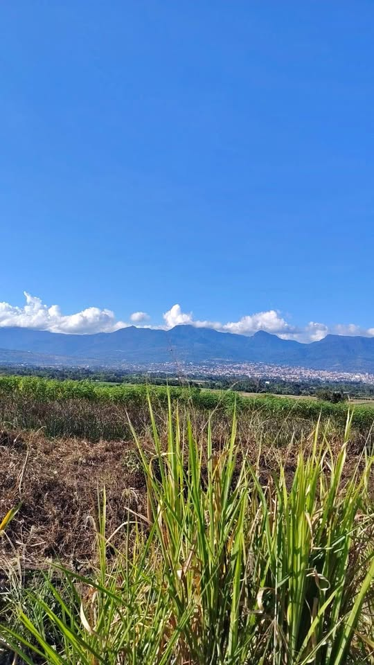

PEN50,000 2,026 m²

Remato hermoso lote de 257 m2; tiene una vista exclusiva a toda la ciudad de Tarapoto. Tiene las siguientes medidas: Frente 11.86 m Derecha 20.26 m Izquierda 20 m Fondo 13.84 m Ubicación del terreno: A 5 minutos de la nueva vía; entramos por Iza motor, entrada a la laguna Ricuricocha una cuadra, luego a la derecha por el canal de agua, unas cuatro cuadras; Sector Santa Rosa, valle central/bajo Mayo, distrito de Tarapoto. Precio valor de mercado en este sector 60,000 soles pero lo estoy rematando en 50,000 soles ligeramente negociable.